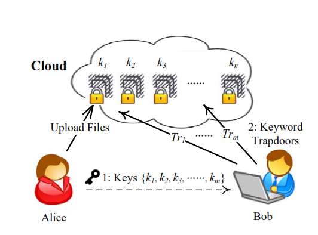

|  | Abstarct The capability of selectively sharing encrypted data with different users via public cloud storage may greatly ease security concerns over inadvertent data leaks in the cloud. A key challenge to designing such encryption schemes lies in the efficient management of encryption keys. The desired flexibility of sharing any group of selected documents with any group of users demands different encryption keys to be used for different documents. However, this also implies the necessity of securely distributing to users a large number of keys for both encryption and search, and those users will have to securely store the received keys, and submit an equally large number of keyword trapdoors to the cloud in order to perform search over the shared data. The implied need for secure communication, storage, and complexity clearly renders the approach impractical. In this paper, we address this practical problem, which is largely neglected in the literature, by proposing the novel concept of keyaggregate searchable encryption (KASE) and instantiating the concept through a concrete KASE scheme, in which a data owner only needs to distribute a single key to a user for sharing a large number of documents, and the user only needs to submit a single trapdoor to the cloud for querying the shared documents. The security analysis and performance evaluation both confirm that our proposed schemes are provably secure and practically efficient. |